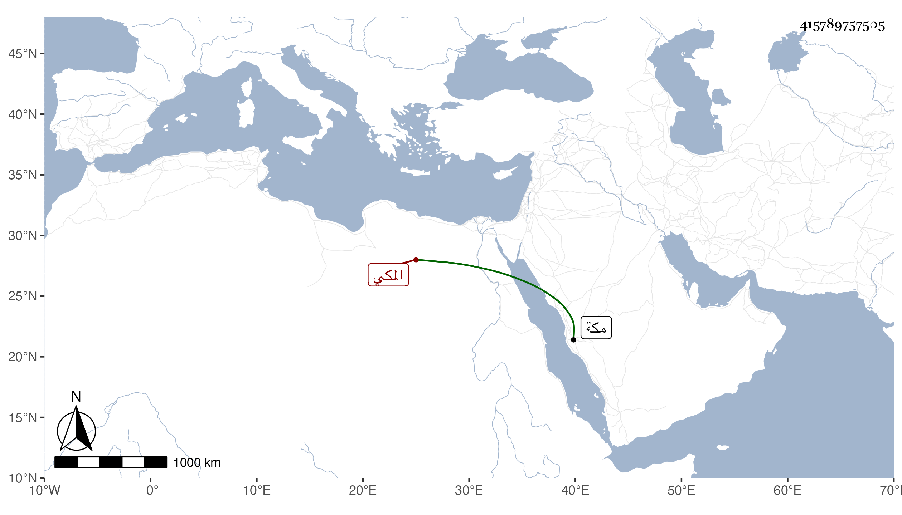

0902Sakhawi.DawLamic.ITO20230111-ara1.EIS1600.415789757505
Biography ID: 415789757505
633
أحمد بن مفتاح الشهاب المكي ويعرف بالقفيلي نسبة لمكان شهير من أعمال حل بن يعقوب كان أبوه عند أمير مكة ثقبة بن رميثة الحسني فنشأ هذا مع بنيه في خدمتهم ثم تقلل منها وأقبل على التجارة فاكتسب دنيا وتردد لليمن تاجرا وعرف عند الناس مع خير وأمانة . مات في العشر الأول من ذي الحجة قبل عرفة سنة تسع عشرة . قاله الفاسي في مكة .
